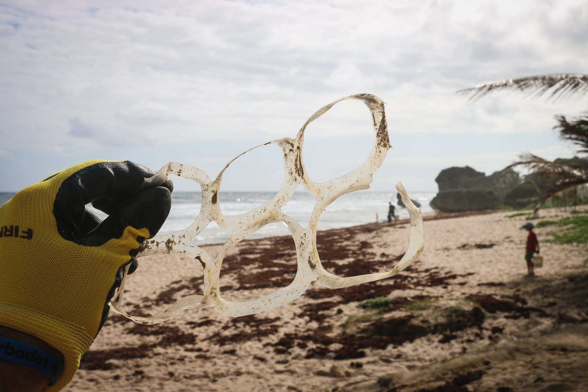

- 活動花絮
APR.04.2021
國境之南
台灣最美麗的風景是人!
上圖描述著淨灘本身不只是一種自發性的環保活動，更是以行動教育下一代的絕佳機會!
到底是誰在亂丟!
減緩海洋汙染 根據近年於國際淨灘間的垃圾統計，海洋垃圾兩大頭號殺手：免洗餐具及塑膠垃圾。光是撿拾到的塑膠瓶，堆疊高度高達8.4座台北101大樓；免洗餐具的數量，以每人三餐使用來計算，可用上將近30年。這些廢棄物歷經幾十年也不會分解，不僅隔離了人與海的距離，也迫使海洋生物享用人類製造的「垃圾食物」。 減緩海洋汙染 根據近年於國際淨灘間的垃圾統計，海洋垃圾兩大頭號殺手：免洗餐具及塑膠垃圾。光是撿拾到的塑膠瓶，堆疊高度高達8.4座台北101大樓；免洗餐具的數量，以每人三餐使用來計算，可用上將近30年。這些廢棄物歷經幾十年也不會分解，不僅隔離了人與海的距離，也迫使海洋生物享用人類製造的「垃圾食物」。
什麼都有 什麼都不奇怪
絕佳的成果
減緩海洋汙染 根據近年於國際淨灘間的垃圾統計，海洋垃圾兩大頭號殺手：免洗餐具及塑膠垃圾。光是撿拾到的塑膠瓶，堆疊高度高達8.4座台北101大樓；免洗餐具的數量，以每人三餐使用來計算，可用上將近30年。這些廢棄物歷經幾十年也不會分解，不僅隔離了人與海的距離，也迫使海洋生物享用人類製造的「垃圾食物」。 減緩海洋汙染 根據近年於國際淨灘間的垃圾統計，海洋垃圾兩大頭號殺手：免洗餐具及塑膠垃圾。光是撿拾到的塑膠瓶，堆疊高度高達8.4座台北101大樓；免洗餐具的數量，以每人三餐使用來計算，可用上將近30年。這些廢棄物歷經幾十年也不會分解，不僅隔離了人與海的距離，也迫使海洋生物享用人類的「垃圾食物」。